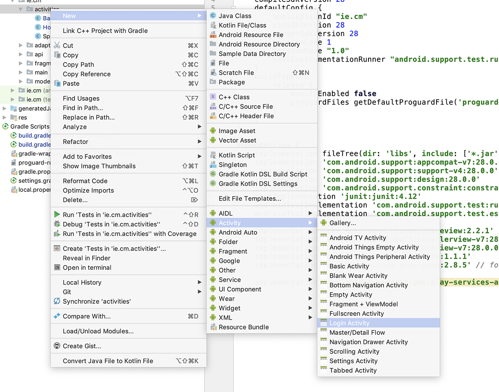

Objectives
This lab continues our Case Study CoffeeMate and once again, yet another major refactoring of the app, where we introduce some basic security using Google Sign-in.
Setting Up Google Sign-in
As we'll need to make a few http requests, we'll start with CoffeeMate.6a.0 as this has VOLLEY implemented, but you could in theory, continue on with your own version.
We now want our CoffeeMate App to interact with our Web App (CoffeeMate-FULLFAT-nodeserver) AND allow the user to manage their own specific coffees, so we'll use Google Sign-in support to allow us to connect to the Web App and Add/Edit/Delete/View User Coffees stored on the Server.
Before you can start integrating Google Services features in your own app, you must create a Google Developers Console project and initialise the GoogleApiClient within your app.
Step 1: Configure for Google Sign-In
Before you begin using Google Services in your Android app, follow all of the steps to Start Integrating Google Sign-In into your Android App.
Step 2: Enable the Google+ API
If you followed the steps above correctly, to add Google Sign-In to your app, you have already created a project in Google Developers Console. Now enable the Google+ API for that project to access Google+ features.
- Go to the
. - From the project drop-down, select the project you previously created.
- In the list of Google APIs, search for the Google+ API service.
- Select Google+ API from the results list.
- Select Enable API.
When the process completes, Google+ API appears in the list of enabled APIs. To access, select API Manager on the left sidebar menu, then select the Enabled APIs tab.
Step 3: Create our Login Page & Google instance variables
Here we'll just create a standard Login Page through Android Studio, so go ahead and Add a new Login activity like so

and
You might get a 'git' dialog box, which you can just choose ok
Then add the following dependency to your app/build.gradle
implementation 'com.shobhitpuri.custombuttons:google-signin:1.0.0'add the following button to your new 'login' layout (and don't forget a new String Resource 'google_sign_up')
<com.shobhitpuri.custombuttons.GoogleSignInButton
android:id="@+id/google_sigin_button"
android:layout_width="match_parent"
android:layout_height="64dp"
android:elevation="9dp"
android:text="@string/google_sign_up"
android:textSize="18sp"
app:isDarkTheme="true" />You might need to add the following to your layout
xmlns:app="http://schemas.android.com/apk/res-auto"You should now have something like this
We're actually going to bypass the manual signin/register for the moment (and all the boilerplate code supplied!) and just focus on signing in with Google.
Finally, add the following to your CoffeeMateApp declarations
/* Client used to interact with Google APIs. */
public GoogleApiClient mGoogleApiClient;
public GoogleSignInOptions mGoogleSignInOptions;
public boolean signedIn = false;
public String googleToken;
public String googleName;
public String googleMail;
public String googlePhotoURL;
public Bitmap googlePhoto;and fix any import errors.
We're now ready to set up the Login process.
Implementing Google Sign-in
What we want is something like this:
The user launches the app
and (after a Splash Screen) is prompted to Sign In with Google, like so
If the user hasn't previously logged in, they will be asked to choose an existing Account, or add a different account (that's what we'll do here)
The user is then prompted for their Google credentials
and then asked to agree to the usual...
The additional account can now be chosen as the active Google account in the app
and we can display the users Google Profile pic, and email in the Navigation Drawer like so (I'm logged in here)
There's quite a lot of code (relatively speaking) to get this off the ground, so we'll use this step as more of a 'configuration' step, and hopefully once you've completed this, you'll be able to 'Go Green' on your own app :-) (Reduce,Reuse,Recycle my code).
We'll be phasing out our Base class here too, so the first step is keeping a reference to our application object and Dialog in Home, like so
public static CoffeeMateApp app = CoffeeMateApp.getInstance();
public AlertDialog loader;Make sure you move the createLoader() and menu methods to Home and remove the references from Base and fix any errors.
You should now be able to delete the Base class altogether.
Now bring in the following method into your Home activity class
// [START signOut]
public void menuSignOut(MenuItem m) {
//https://stackoverflow.com/questions/38039320/googleapiclient-is-not-connected-yet-on-logout-when-using-firebase-auth-with-g
app.mGoogleApiClient.connect();
app.mGoogleApiClient.registerConnectionCallbacks(new GoogleApiClient.ConnectionCallbacks() {
@Override
public void onConnected(@Nullable Bundle bundle) {
//FirebaseAuth.getInstance().signOut();
if(app.mGoogleApiClient.isConnected()) {
Auth.GoogleSignInApi.signOut(app.mGoogleApiClient).setResultCallback(new ResultCallback<Status>() {
@Override
public void onResult(@NonNull Status status) {
if (status.isSuccess()) {
//Log.v("coffeemate", "User Logged out");
Intent intent = new Intent(Home.this, Login.class);
startActivity(intent);
finish();
}
}
});
}
}
@Override
public void onConnectionSuspended(int i) {
Toast.makeText(Home.this, "Google API Client Connection Suspended",Toast.LENGTH_SHORT).show();
}
});
}
// [END signOut]Also, just confirm that you have the following permissions in your manifest file
<uses-permission android:name="android.permission.INTERNET" />and the following in your build.gradle
implementation 'com.google.android.gms:play-services-auth:15.0.1'Next, bring in a 'Logout' Option in your Menu, like so
<item
android:id="@+id/menu_signout"
android:title="Logout"
android:orderInCategory="100"
app:showAsAction="never"
android:onClick="menuSignOut"/>Now, introduce the following variable in your Home Activity
private ImageView googlePhoto;and the following code in your onCreate() method BEFORE your fragment transaction
//SetUp GooglePhoto and Email for Drawer here
googlePhoto = navigationView.getHeaderView(0).findViewById(R.id.googlephoto);
CoffeeApi.getGooglePhoto(app.googlePhotoURL,googlePhoto);
TextView googleName = navigationView.getHeaderView(0).findViewById(R.id.googlename);
googleName.setText(app.googleName);
TextView googleMail = navigationView.getHeaderView(0).findViewById(R.id.googlemail);
googleMail.setText(app.googleMail);You'll get an error on
CoffeeApi.getGooglePhoto(app.googlePhotoURL,googlePhoto);so add the following method to your CoffeeApi class
public static void getGooglePhoto(String url,final ImageView googlePhoto) {
ImageRequest imgRequest = new ImageRequest(url,
new Response.Listener<Bitmap>() {
@Override
public void onResponse(Bitmap response) {
Home.app.googlePhoto = response;
googlePhoto.setImageBitmap(Home.app.googlePhoto);
}
}, 0, 0, ImageView.ScaleType.FIT_XY, Bitmap.Config.ARGB_8888,
new Response.ErrorListener() {
@Override
public void onErrorResponse(VolleyError error) {
System.out.println("Something went wrong!");
error.printStackTrace();
}
});
// Add the request to the queue
Home.app.add(imgRequest);
}If you get errors on googlename and googlemail, just confirm the following in your 'nav_header_home.xml'

We should probably also allow the user to 'disconnect' their account from the app so add the following to your login layout (and add the necessary string resource)
<com.shobhitpuri.custombuttons.GoogleSignInButton
android:id="@+id/google_disconnect_button"
android:layout_width="match_parent"
android:layout_height="64dp"
android:elevation="9dp"
android:text="@string/google_disconnect"
android:textSize="18sp"
app:isDarkTheme="false" />and you'll get something like this
Now we're ready to start the actual login process
Building the Google Client
First, open your existing Login class and add the following declarations
public CoffeeMateApp app = CoffeeMateApp.getInstance();
/* Request code used to invoke sign in user interactions. */
private static final int RC_SIGN_IN = 0;
private static final String TAG = "coffeemate";then go to your onCreate() and add the following
// [START configure_signin]
// Configure sign-in to request the user's ID, email address, and basic
// profile. ID and basic profile are included in DEFAULT_SIGN_IN.
app.mGoogleSignInOptions = new GoogleSignInOptions
.Builder(GoogleSignInOptions.DEFAULT_SIGN_IN)
.requestEmail()
.requestProfile()
.build();
// [END configure_signin]
// [START build_client]
// Build a GoogleApiClient with access to the Google Sign-In API and the
// options specified by mGoogleSignInOptions.
app.mGoogleApiClient = new GoogleApiClient.Builder(this)
.enableAutoManage(this /* FragmentActivity */,
this /* OnConnectionFailedListener */)
.addApi(Auth.GOOGLE_SIGN_IN_API, app.mGoogleSignInOptions)
.build();
// [END build_client]
findViewById(R.id.google_sigin_button).setOnClickListener(this);
findViewById(R.id.google_disconnect_button).setOnClickListener(this);Fix the import errors and then the remaining errors by implementing the necessary interfaces, like so
and
Next, add the following
// [START signIn]
private void signIn() {
Intent signInIntent = Auth.GoogleSignInApi.getSignInIntent(app.mGoogleApiClient);
startActivityForResult(signInIntent, RC_SIGN_IN);
}
// [END signIn]
// [START revokeAccess]
private void revokeAccess() {
Auth.GoogleSignInApi.revokeAccess(app.mGoogleApiClient).setResultCallback(
new ResultCallback<Status>() {
@Override
public void onResult(Status status) {
// [START_EXCLUDE]
startLoginScreen();
// [END_EXCLUDE]
}
});
}
// [END revokeAccess]
private void startHomeScreen() {
Intent intent = new Intent(this, Home.class);
startActivity(intent);
}
private void startLoginScreen() {
Intent intent = new Intent(this, Login.class);
startActivity(intent);
}and replace the implemented methods with these
@Override
public void onClick(View v) {
if (v.getId() == R.id.google_sigin_button) {
signIn();
}
else
if (v.getId() == R.id.google_disconnect_button) {
revokeAccess();
}
}
@Override
public void onConnectionFailed(ConnectionResult connectionResult) {
Toast.makeText(this, "Error Signing in to Google " + connectionResult, Toast.LENGTH_LONG).show();
Log.v(TAG, "ConnectionResult : " + connectionResult);
}You then need to add the following to start and handle the sign in process
@Override
public void onStart() {
super.onStart();
OptionalPendingResult<GoogleSignInResult> opr = Auth.GoogleSignInApi.silentSignIn(app.mGoogleApiClient);
if (opr.isDone()) {
// If the user's cached credentials are valid, the OptionalPendingResult will be "done"
// and the GoogleSignInResult will be available instantly.
Log.d(TAG, "Got cached sign-in");
GoogleSignInResult result = opr.get();
handleSignInResult(result);
} else {
// If the user has not previously signed in on this device or the sign-in has expired,
// this asynchronous branch will attempt to sign in the user silently. Cross-device
// single sign-on will occur in this branch.
//showProgressDialog();
opr.setResultCallback(new ResultCallback<GoogleSignInResult>() {
@Override
public void onResult(GoogleSignInResult googleSignInResult) {
handleSignInResult(googleSignInResult);
}
});
}
}
// [START onActivityResult]
@Override
public void onActivityResult(int requestCode, int resultCode, Intent data) {
super.onActivityResult(requestCode, resultCode, data);
// Result returned from launching the Intent from GoogleSignInApi.getSignInIntent(...);
if (requestCode == RC_SIGN_IN) {
GoogleSignInResult result = Auth.GoogleSignInApi.getSignInResultFromIntent(data);
handleSignInResult(result);
}
}
// [END onActivityResult]
// [START handleSignInResult]
private void handleSignInResult(GoogleSignInResult result) {
Log.d(TAG, "handleSignInResult:" + result.isSuccess());
if (result.isSuccess()) {
// Signed in successfully, show authenticated UI.
GoogleSignInAccount acct = result.getSignInAccount();
app.googleName = acct.getDisplayName();
// by default the profile url gives 50x50 px image only
// we can replace the value with whatever dimension we want by
// replacing sz=X
// personPhotoUrl = personPhotoUrl.substring(0,
// personPhotoUrl.length() - 2)
// + 100;
app.googleToken = acct.getId();
app.signedIn = true;
app.googleMail = acct.getEmail();
if(acct.getPhotoUrl() == null)
; //New Account may not have Google+ photo
else app.googlePhotoURL = acct.getPhotoUrl().toString();
// Show a message to the user that we are signing in.
Toast.makeText(this, "Signing in " + app.googleName +" with " + app.googleMail , Toast.LENGTH_SHORT).show();
startHomeScreen();
} else
Toast.makeText(this, "Please Sign in " , Toast.LENGTH_SHORT).show();
}
// [END handleSignInResult]There's 2 other small steps, but vital ones, to get your Login Screen loading after your splash Screen and getting the correct coffees - and I'll leave that up to you.
Once you get the app running and a user Signing in - you'll see that the list can be downloaded as before, and the users Google credentials are displayed in the Nav Drawer - but these coffees aren't associated with any user, they're just stored on the server anonymously, so to speak - the rest of the lab involves refactoring our code to make API requests on the Server to Add/Delete/Update etc. users coffees specifically.
To save you time, and if you ran into any configuration issues, here's a version of CoffeeMate up to this point CoffeeMate.7.0.sofar.zip
Google Integration - Retrieving 'My Coffees'
At the moment the user is seeing a list of all coffees stored on the server, so let's make the app a bit more user friendly and download only the users coffees.
This is actually a very simple step, all we need to do is modify our APi call and add the users Google credentials to the request (which we already have) like so:
CoffeeApi.get("/coffees/" + app.googleToken);so now when we run the app we only see the current users coffees - here's mine (at the time of the request)
Make sure you're connecting to the full fat version of our web server and don't forget to update the other calls, as in when you delete, refresh etc.
Google Integration - Adding a Coffee
Adding a coffee is nearly as easy as the last step, as all we need to do is change 2 lines of code in our AddFragment.
It's virtually identical to the last step, so have a go at that now, and confirm that you can add your own coffees to the server.
If you notice that your coffees aren't being added as expected, can you work out why not? Again, this is an easy fix :)
As a hint, make sure, your Coffee Model matches your JSON Model on the Server.
JSON From FULL FAT server
{
"status": 99,
"message": "User Coffees Successfully Retrieved!",
"data": [
{
"favourite": false,
"_id": "5c00111111111116cd95b0",
"name": "Standard Black lite",
"shop": "Tescos",
"price": 1.99,
"rating": 2.5,
"marker": "",
"address": "",
"usertoken": "111111111111111118125",
"googlephoto": "https://l/photo.jpg",
"__v": 0
},
{
"favourite": false,
"_id": "5c0012311111111116cd95b1",
"name": "Mocca Latte",
"shop": "Aldi",
"price": 2.99,
"rating": 3.5,
"marker": "",
"address": "",
"usertoken": "111111111111111118125",
"googlephoto": "https://l/photo.jpg",
"__v": 0
},
{
"favourite": true,
"_id": "5c001251111111111195b2",
"name": "Home Brew",
"shop": "The gaff",
"price": 0.99,
"rating": 4.5,
"marker": "",
"address": "",
"usertoken": "111111111111111118125",
"googlephoto": "https://l/photo.jpg",
"__v": 0
},
{
"favourite": false,
"_id": "5c00243f1111111111018aa",
"name": "test",
"shop": "shop",
"price": 1.99,
"rating": 2.5,
"usertoken": "111111111111111118125",
"googlephoto": "https://l/photo.jpg",
"__v": 0
}
]
}Google Integration - Updating a Coffee
Updating a coffee is nearly as easy as adding, in that all we need to do is change a few lines of code in our EditFragment. We also need to make a minor change to our CoffeeApi PUT, but we'll get to that in a minute.
So, the first thing to do is make sure you can retrieve the users coffee and display in on the Edit screen, like so
To achieve this you'll need to modify how you GET the coffee from the server in your EditFragment, so try that now.
Next, to PUT the coffee, you need to make a similar change to how you save the coffee, so try that now too.
You'll notice that in the put() method in our CoffeeApi we're not passing in the usertoken when we force a get() to refresh our list of coffees, so this is where we need to refactor the method signature, and pass in the usertoken which we can then use to GET the coffees again.
This is just a matter of passing in a String variable to the method, representing the usertoken, so have a go at that now and see how you get on.
NOTE : As we're passing in the token already, there's a number of different solutions to this, so feel free to try your own.
If all goes to plan you should be able to edit a users coffee on the server and see this change when the user is returned to the screen they were on, prior to editing their coffee.
Google Integration - Deleting Coffees
As we already have all the necessary code in place from previous versions of CoffeeMate, AND we still have a full APi class available to us, this step is very simple - we just need to change our delete method(s) to delete the specific user coffee (or multiple coffees) from the server.
we achieve deleting a single coffee by calling our CoffeeApi 'delete' method like so
CoffeeApi.delete("/coffees/" + app.googleToken +"/" + coffee._id);so see if you can work out where this call should go, and what code it should replace?
We can use the same method call to delete multiple coffees so try and have a go at implementing this feature (which was covered in the lectures).
After some testing, you may find that the delete isn't working as expected, so I'd suggest taking the same approach as we took with updating - forcing a GET after we updated.
That completes this lab and you can find a solution on the next page.
Solution
This is a solution which uses a Web Service and Volley with Google Sign-in to manage the Coffees in the app: